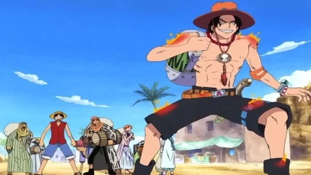

Saga East Blue
Capitulos 1 a 61
Comenzamos con la saga que introdujo a Luffy en el mundo, la llamada Saga East Blue. Muestra al personaje como un niño que vive en East Blue y al comienzo de reclutar a la tripulación para cazar el One Piece e intentar convertirse en el Rey Pirata.
Saga Alabastro
Capitulos 62 a 135

En la segunda saga, titulada Alabastro (o Baroque Works), Luffy y su equipo continúan buscando el One Piece, convencidos de que el joven puede convertirse en el Rey Pirata. Sin embargo, deben ayudar a Nefertari Vivi a llegar a su tierra natal antes de que comience una guerra. El problema es que una organización maliciosa hará cualquier cosa para evitar que Luffy y sus amigos lleguen a Alabastro.